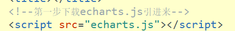
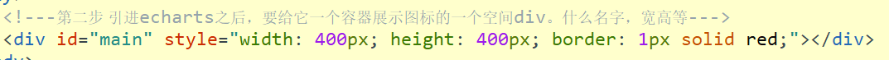
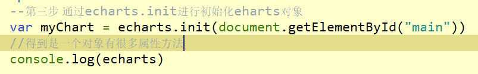
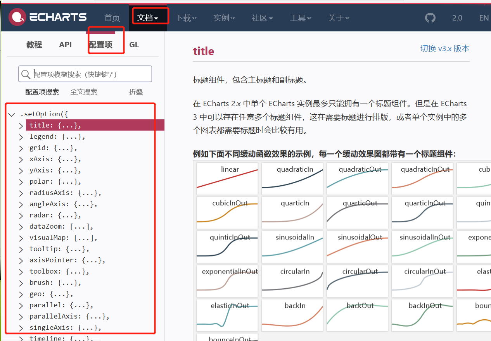
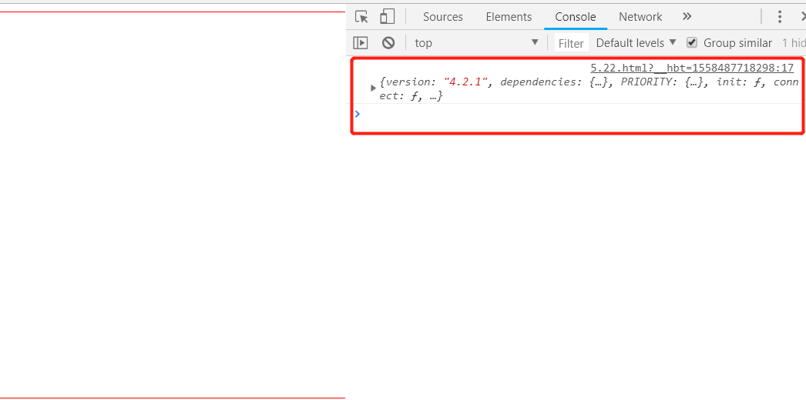
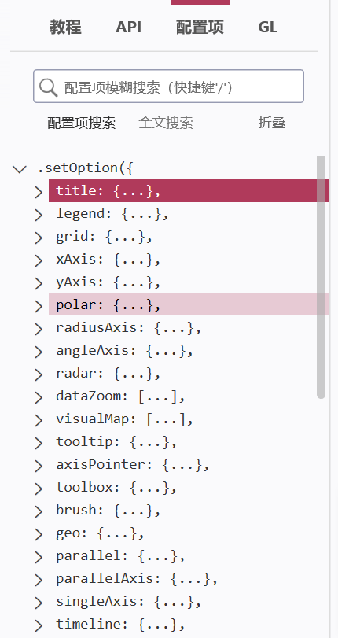
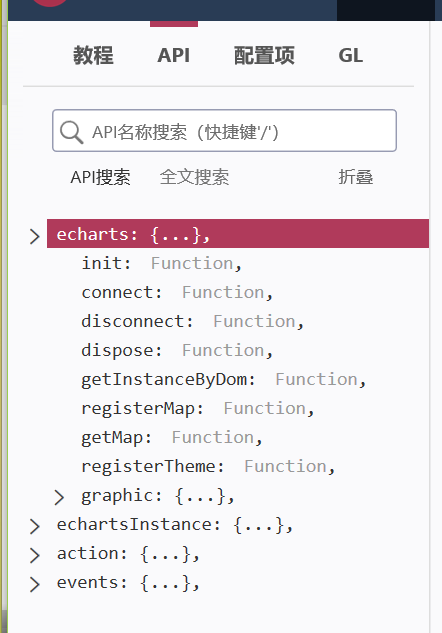
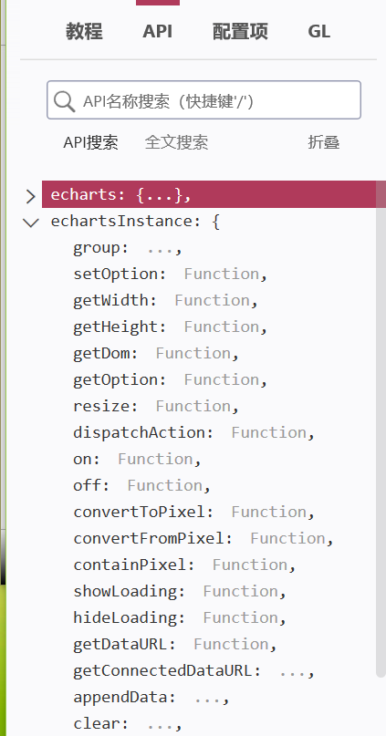
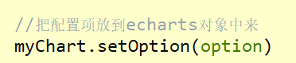
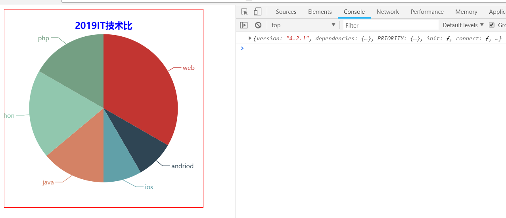

1.了解ECharts
ECharts简单说就是互联网开发程序过程中，后台数据库用以实现数据到图形的映射的一个插件。
具体来说一个使用 JavaScript 实现的开源可视化库，可以流畅的运行在PC和移动端设备上，兼容当前绝大部分浏览器，底层以来轻量级的矢量图库Zrender，提供直观，交互丰富，可以高度个性化定制的数据可视化图标。
第一步：下载echarts.js

https://echarts.baidu.com/
现在在官网下载的文件可能不能使用，有需要echarts.js的可以联系本人为大家提供免费的 echarts.js 文件。联系方式在下方
第二步：

第三步：

<!DOCTYPE html>
<html>
<head>
<meta charset="UTF-8">
<title></title>
<!--第一步下载echarts.js引进来-->
<script src="echarts.js"></script>
</head>
<body>
<!---第二步 引进echarts之后，要给它一个容器展示图标的一个空间div。什么名字，宽高等--->
<div id="main" style="width: 400px; height: 400px; border: 1px solid red;"></div>
</body>
</html>
<script>
// --第三步 通过echarts.init进行初始化eharts对象
var myChart = echarts.init(document.getElementById("main"))
//得到是一个对象有很多属性方法
console.log(echarts)
</script>
配置项：配置项中有很多属性和方法

API：
引入echarts.js文件后 console.log（echarts）得到是一个echarts对象

echarts对象上有一个init() ，通过echarts的init() 得到一个实例叫echartsInstance() 它身上也有很多方法，echartssInstance() 上有一个setOption() 方法 因为我们要做图表，setOption身上有我们需要的属性和方法
init() 初始echarts实例
我们要做的做一个图表里面要有什么，比如：销量、x轴，y轴、人数、这些统一都称为 Option，这些属性方法都在setOption身上



setOption() 配置图表的选项

通过echarts对象第一次引进来时，就得到这个对象，这个对象通过init() 得到一个实例对象，实例对象再通过setOption() 配置选项
需要了解 setOption() 里面的属性和方法
十大图表：
1. 柱状图 bar
2. 折线图 line
3. 饼图 pic
4. 散点图 scatter
5. 气泡图 bubble
6. 雷达图 radar
7. 地图 map
8. 漏斗图 funnel
9. 词云 word Cloud
10.仪表图 gauge
以下是个小案例：
<!DOCTYPE html>
<html>
<head>
<meta charset="UTF-8">
<title></title>
<!--第一步下载echarts.js引进来-->
<script src="echarts.js"></script>
</head>
<body>
<!---第二步 引进echarts之后，要给它一个容器展示图标的一个空间div。什么名字，宽高等--->
<div id="main" style="width: 400px; height: 400px; border: 1px solid red;"></div>
</body>
</html>
<script>
// 第三步 通过echarts.init进行初始化eharts对象
// myChart是echarts的一个实例 有很多方法
var myChart = echarts.init(document.getElementById("main"))
//得到是一个对象有很多属性方法
console.log(echarts)
//配置项
option = {
title:{
text:"2019IT技术比",
left:"center",
top:10,
textStyle:{
color:"blue"
}
},
tooltip:{
formatter:"{b0} {d0}"
},
series:{
type:"pie",
data:[
{name:"web",value:120},
{name:"andriod",value:30},
{name:"ios",value:30},
{name:"java",value:50},
{name:"python",value:70},
{name:"php",value:60},
]
},
}
//把配置项放到echarts对象中来
myChart.setOption(option)
</script>
作者：晋飞翔
手机(微信同步)：17812718961